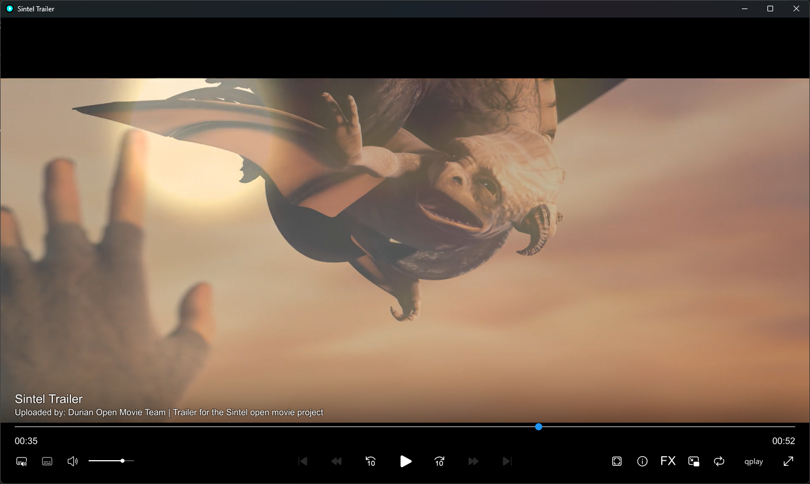

qplay
A video player based on mpv
qplay plays local files and direct video streams. The player supports upscaling and frame generation.

Playback
Use the settings menu to choose audio and subtitle tracks, change playback speed and adjust audio delay.
Upscaling and frame generation depend on your graphics card. Frame generation may need to download additional components.
Integration with qbutt and qcatch
qcatch finds video on the page you have open and sends it to qplay. qbutt uses the same player for online video and torrent files that are still downloading.
More about the player